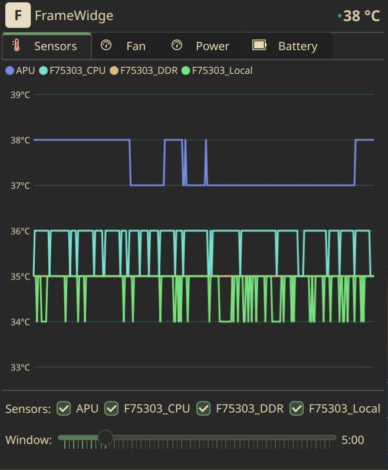
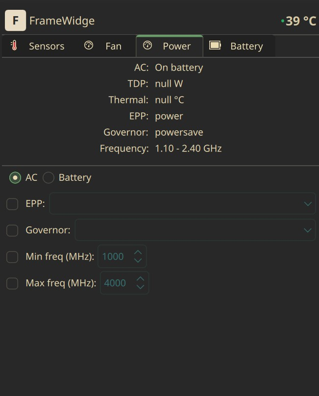
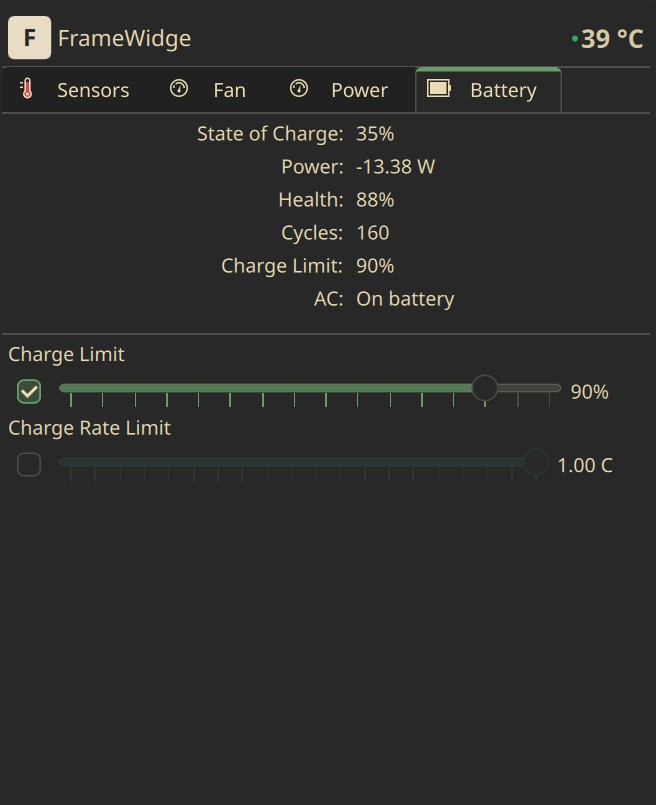

Fan Control
Lüftersteuerung
Auto, manual duty slider, and custom curve editor with drag-and-drop points. Hysteresis, rate limiting, per-fan overrides for Framework 16, and a calibration wizard for accurate RPM overlay.
Automatik, manueller Duty-Regler und Kurveneditor mit verschiebbaren Punkten. Hysterese, Ratenbegrenzung, Einstellungen pro Lüfter beim Framework 16 und ein Kalibrierassistent für eine genaue RPM-Anzeige.
Sensor Telemetry
Sensordaten
Live temperature graphs with configurable history window, per-sensor selection, and color-coded legend. Data sourced from the backend's telemetry collector.
Live-Temperaturdiagramme mit einstellbarem Zeitfenster, Auswahl pro Sensor und farbiger Legende. Die Daten kommen vom Telemetrie-Sammler des Backends.
Power Profiles
Energieprofile
Separate AC and battery profiles. EPP preference, CPU governor, frequency limits, TDP, and thermal controls — all capability-driven from the backend.
Getrennte Profile für Netz- und Akkubetrieb. EPP-Einstellung, CPU-Governor, Frequenzlimits, TDP und Thermik – alles abhängig von den Fähigkeiten des Backends.
Battery Management
Akkuverwaltung
Live charge/discharge wattage, health percentage, cycle count, charge limit (25–100%), and charge rate limiting with optional SoC threshold. ETA to full or empty.
Live-Lade- und Entladeleistung, Gesundheit in Prozent, Ladezyklen, Ladelimit (25–100 %) und Ladeleistungsbegrenzung mit optionaler SoC-Schwelle. Restzeit bis voll oder leer.
System Tray
Systemtray
Compact icon with configurable overlay (temperature, RPM, or SoC). Rich tooltip with live stats. Dims when the service is offline.
Kompaktes Symbol mit einstellbarer Einblendung (Temperatur, RPM oder Ladestand). Ausführlicher Tooltip mit Live-Werten. Wird abgedunkelt, wenn der Dienst offline ist.
Smart Onboarding
Geführte Einrichtung
When the backend is not installed, the widget shows a friendly setup guide with a copyable install command — no terminal hunting required.
Ist das Backend nicht installiert, zeigt das Widget eine Einrichtungsanleitung mit kopierbarem Installationsbefehl – ohne Suche im Terminal.
Fan curves you can drag
Lüfterkurven zum Ziehen
Pick Auto, Manual or Curve. The curve editor is a graph you click and drag: click to add a point, drag to move it, double-click to remove it. The live sensor readings are drawn as dashed guides, so you see where the fan sits on the curve right now.
Wähle Auto, Manuell oder Kurve. Der Kurveneditor ist ein Diagramm, das du anklickst und ziehst: Klick fügt einen Punkt hinzu, Ziehen verschiebt ihn, Doppelklick entfernt ihn. Die aktuellen Sensorwerte erscheinen als gestrichelte Hilfslinien, sodass du siehst, wo der Lüfter gerade auf der Kurve steht.
- Hysteresis and rate limit (with an optional separate down rate) keep the fan from hunting
- Sensor selection: the curve follows the hottest of the sensors you tick
- Presets save a curve with its settings; a preset can be tied to a Plasma Activity and switches on when that Activity becomes current
- A calibration wizard and per-fan overrides on the Framework 16 for accurate RPM values
- Hysterese und Ratenbegrenzung (mit optional eigener Absenkrate) verhindern, dass der Lüfter hin und her springt
- Sensorauswahl: Die Kurve folgt dem heißesten der angehakten Sensoren
- Presets speichern eine Kurve samt Einstellungen; ein Preset lässt sich an eine Plasma-Aktivität binden und schaltet sich ein, sobald diese Aktivität aktuell wird
- Ein Kalibrierassistent und Einstellungen pro Lüfter beim Framework 16 für genaue RPM-Werte
Temperatures over time
Temperaturen im Zeitverlauf
The Sensors tab draws one line per sensor with a color-coded legend. Tick the sensors you care about and stretch or shrink the time window with the slider.
Der Sensoren-Tab zeichnet pro Sensor eine Linie mit farbiger Legende. Hake die Sensoren an, die dich interessieren, und ziehe das Zeitfenster mit dem Regler größer oder kleiner.
- History comes from the backend's telemetry collector, so the graph is filled as soon as you open the popup
- The same sensor colors are used for the live markers in the fan curve editor
- The header always shows the current temperature
- Der Verlauf kommt vom Telemetrie-Sammler des Backends, das Diagramm ist also beim Öffnen des Popups sofort gefüllt
- Dieselben Sensorfarben erscheinen als Live-Marker im Kurveneditor der Lüfter
- Die Kopfzeile zeigt immer die aktuelle Temperatur

Separate profiles for AC and battery
Getrennte Profile für Netz und Akku
The Power tab shows the current state at the top: AC or battery, TDP, thermal limit, energy performance preference, governor and frequency range. Below, switch between the AC and the Battery profile and tick a setting to override it.
Der Energie-Tab zeigt oben den aktuellen Zustand: Netz oder Akku, TDP, Thermik-Limit, Energieeinstellung (EPP), Governor und Frequenzbereich. Darunter wechselst du zwischen Netz- und Akkuprofil und hakst eine Einstellung an, um sie zu überschreiben.
- EPP and governor pickers, plus minimum and maximum frequency
- TDP and thermal controls appear when the backend reports that your hardware supports them
- Hover tooltips explain the jargon: AC, TDP, EPP and governor
- Auswahl für EPP und Governor sowie minimale und maximale Frequenz
- TDP und Thermik-Regler erscheinen, wenn das Backend meldet, dass deine Hardware sie unterstützt
- Tooltips erklären die Fachbegriffe: AC, TDP, EPP und Governor

Protect the battery
Den Akku schonen
The Battery tab shows state of charge, power flow, health and cycle count. A charge limit stops charging at the level you choose, and an optional charge rate limit slows charging down.
Der Akku-Tab zeigt Ladestand, Leistungsfluss, Gesundheit und Zyklenzahl. Ein Ladelimit stoppt das Laden bei dem Wert, den du wählst, und ein optionales Ladeleistungslimit bremst das Laden.
- Charge limit from 25 to 100 percent
- Charge rate limit in C, with an optional state-of-charge threshold
- Live wattage while charging or discharging, plus the time to full or empty
- Ladelimit von 25 bis 100 Prozent
- Ladeleistungslimit in C, mit optionaler Ladestand-Schwelle
- Live-Leistung beim Laden und Entladen sowie die Zeit bis voll oder leer

The tray icon
Das Tray-Symbol
The compact icon is more than a launcher. It can show a live number, colors it by value and turns into a tooltip with the details.
Das kompakte Symbol ist mehr als ein Starter. Es kann eine Zahl live anzeigen, färbt sie nach Wert und wird zum Tooltip mit den Details.
| Tray displayTray-Anzeige | ShowsZeigt |
|---|---|
| CPU temperatureCPU-Temperatur | The current temperature as a number on the iconDie aktuelle Temperatur als Zahl auf dem Symbol |
| Fan RPMLüfter-RPM | The current fan speedDie aktuelle Lüfterdrehzahl |
| Battery %Akku % | The state of chargeDen Ladestand |
| Icon onlyNur Symbol | The chip icon with a small status dot graded by temperatureDas Chip-Symbol mit einem kleinen, nach Temperatur gefärbten Statuspunkt |
- Also show the icon stacks the chip icon above the number
- Overlay size scales the number from 50 to 200 percent
- Value colors are editable bands per mode, using theme colors or your own hex values
- The tooltip lists CPU temperature, fan RPM, battery and fan mode
- The icon dims when the backend is not reachable
- Symbol zusätzlich anzeigen stapelt das Chip-Symbol über der Zahl
- Overlay-Größe skaliert die Zahl von 50 bis 200 Prozent
- Wertefarben sind pro Modus einstellbare Bänder, mit Theme-Farben oder eigenen Hex-Werten
- Der Tooltip nennt CPU-Temperatur, Lüfter-RPM, Akku und Lüftermodus
- Das Symbol wird abgedunkelt, wenn das Backend nicht erreichbar ist
How it works
So funktioniert es
FrameWidge is only the frontend. The heavy lifting stays in the framework-control service, which FrameWidge reaches over a local REST API.
FrameWidge ist nur die Oberfläche. Die Arbeit bleibt im Dienst framework-control, den FrameWidge über eine lokale REST-API erreicht.
127.0.0.1:30912- The framework-control service runs as a root systemd unit and communicates with the laptop's embedded controller via
framework_tool. - It exposes a REST API on
127.0.0.1:30912for reading sensors, setting fan modes, managing power profiles, and configuring battery limits. - This Plasma widget is a pure QML frontend that polls the API and sends config changes. No C++ compilation, no additional daemons.
- All settings persist in
/etc/framework-control/config.jsonand are applied at boot by the backend service.
- Der Dienst framework-control läuft als systemd-Unit mit Root-Rechten und spricht über
framework_toolmit dem Embedded Controller des Laptops. - Er stellt unter
127.0.0.1:30912eine REST-API bereit, um Sensoren zu lesen, Lüftermodi zu setzen, Energieprofile zu verwalten und Akkulimits einzustellen. - Dieses Plasma-Widget ist ein reines QML-Frontend, das die API abfragt und Konfigurationsänderungen sendet. Kein C++-Build, keine zusätzlichen Daemons.
- Alle Einstellungen liegen in
/etc/framework-control/config.jsonund werden beim Start vom Backend-Dienst angewendet.
Requirements
Voraussetzungen
Install
Installation
- Run the one-liner from the box above. It asks which release channel to install: Stable, Beta or Main.
- The script installs the framework-control backend (this needs
sudo) and the widget withkpackagetool6. - Add FrameWidge from the Plasma widget picker to your panel or system tray.
- If the backend is not running, the widget shows a setup screen with the install command and the
systemctlstart command to copy.
- Führe den Einzeiler aus der Box oben aus. Er fragt, welchen Release-Kanal du installieren willst: Stable, Beta oder Main.
- Das Skript installiert das Backend framework-control (dafür braucht es
sudo) und das Widget mitkpackagetool6. - Füge FrameWidge im Widget-Auswahldialog deinem Panel oder Systemtray hinzu.
- Läuft das Backend nicht, zeigt das Widget eine Einrichtungsseite mit dem Installationsbefehl und dem
systemctl-Startbefehl zum Kopieren.
Prefer to do it by hand? Install the backend and the plasmoid separately, update from a checkout and remove the widget with kpackagetool6.
Lieber von Hand? Installiere Backend und Plasmoid getrennt, aktualisiere aus einem Checkout und entferne das Widget mit kpackagetool6.
Configuration
Konfiguration
Right-click the widget and choose Configure. There are two pages: General for the widget itself and System Info for everything that talks to the backend.
Rechtsklick auf das Widget und Einrichten. Es gibt zwei Seiten: Allgemein für das Widget selbst und Systeminfo für alles, was mit dem Backend spricht.
| SettingEinstellung | DefaultStandard | What it doesWas sie macht |
|---|---|---|
| Service portDienst-Port | 30912 | Port of the framework-control servicePort des Dienstes framework-control |
| Poll intervalAbfrageintervall | 2000 ms | How often health and data are polledWie oft Zustand und Daten abgefragt werden |
| Tray displayTray-Anzeige | temp | temp, rpm, soc or icontemp, rpm, soc oder icon |
| Overlay size and colorsOverlay-Größe und Farben | 100 % | Size of the number on the icon and the color bands per modeGröße der Zahl auf dem Symbol und die Farbbänder pro Modus |
| System Info pageSeite Systeminfo | – | System and version info, telemetry poll settings, log viewer and a link to the web UISystem- und Versionsinfo, Telemetrie-Einstellungen, Log-Ansicht und ein Link zur Web-Oberfläche |
Fan, power and battery settings are stored by the backend in /etc/framework-control/config.json and applied at boot. Fan curve presets stay in the widget's own configuration.
Lüfter-, Energie- und Akku-Einstellungen speichert das Backend in /etc/framework-control/config.json und wendet sie beim Start an. Lüfterkurven-Presets bleiben in der eigenen Konfiguration des Widgets.
Questions
Fragen
Is this an official Framework or framework-control project?Ist das ein offizielles Framework- oder framework-control-Projekt?
No. FrameWidge is an independent Plasma frontend for the REST API of ozturkkl/framework-control. The backend is developed and maintained by its original author.
Nein. FrameWidge ist eine unabhängige Plasma-Oberfläche für die REST-API von ozturkkl/framework-control. Das Backend wird vom Original-Autor entwickelt und gepflegt.
Why do I need to install a backend too?Warum muss ich zusätzlich ein Backend installieren?
The widget cannot talk to the embedded controller itself. The framework-control service does that as root and exposes the values over a local API. The KDE Store package contains only the widget, so the one-liner installs both.
Das Widget kann nicht selbst mit dem Embedded Controller sprechen. Das erledigt der Dienst framework-control als root und stellt die Werte über eine lokale API bereit. Das Paket aus dem KDE Store enthält nur das Widget, deshalb installiert der Einzeiler beides.
The widget says "Service Not Reachable"Das Widget meldet „Service Not Reachable“
The backend is missing or stopped. The widget shows the install command and the systemctl command to start it. Check the service port in the widget settings if you changed it.
Das Backend fehlt oder ist gestoppt. Das Widget zeigt den Installationsbefehl und den systemctl-Befehl zum Starten. Prüfe den Dienst-Port in den Widget-Einstellungen, falls du ihn geändert hast.
Which laptops work?Welche Laptops funktionieren?
Framework Laptop 13 and 16, AMD or Intel, on KDE Plasma 6 with Wayland or X11 and systemd. Some Power controls only show up when your hardware reports support for them.
Framework Laptop 13 und 16, AMD oder Intel, unter KDE Plasma 6 mit Wayland oder X11 und systemd. Manche Energie-Regler erscheinen nur, wenn deine Hardware sie meldet.
Where are my settings stored?Wo werden meine Einstellungen gespeichert?
Fan, power and battery settings live in the backend, in /etc/framework-control/config.json, and are applied at boot even without the widget. Widget settings and fan curve presets live in the widget configuration.
Lüfter-, Energie- und Akku-Einstellungen liegen im Backend, in /etc/framework-control/config.json, und werden beim Start auch ohne Widget angewendet. Widget-Einstellungen und Lüfterkurven-Presets liegen in der Widget-Konfiguration.
Is it safe to use?Ist die Nutzung sicher?
The project is vibe-coded and in beta, and fan curves change how your laptop cools itself. Start with Auto, change one thing at a time and keep an eye on the temperatures. Use at your own risk.
Das Projekt ist vibe-codiert und in der Beta, und Lüfterkurven ändern, wie dein Laptop sich kühlt. Beginne mit Auto, ändere jeweils nur eine Sache und behalte die Temperaturen im Blick. Nutzung auf eigene Gefahr.
Roadmap
Roadmap
The widget is in beta. Next up: a first stable GitHub release, so the Stable channel of the installer points at something real, and AUR and COPR packages.
Das Widget ist in der Beta. Als Nächstes: ein erstes stabiles GitHub-Release, damit der Stable-Kanal des Installers auf etwas Echtes zeigt, sowie AUR- und COPR-Pakete.
Details in the roadmap.
Details in der Roadmap.